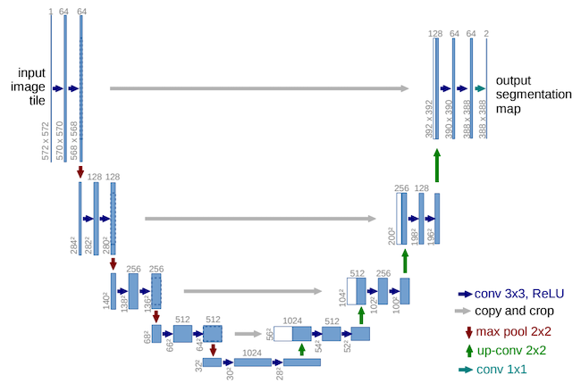
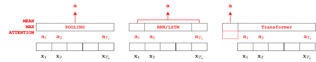
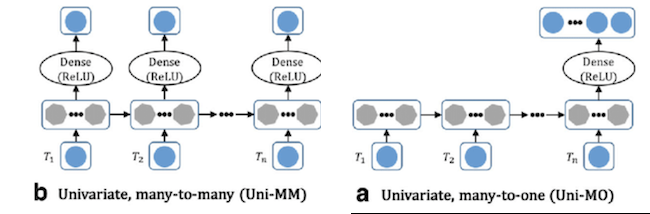
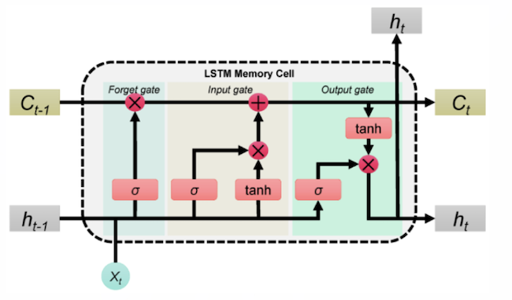
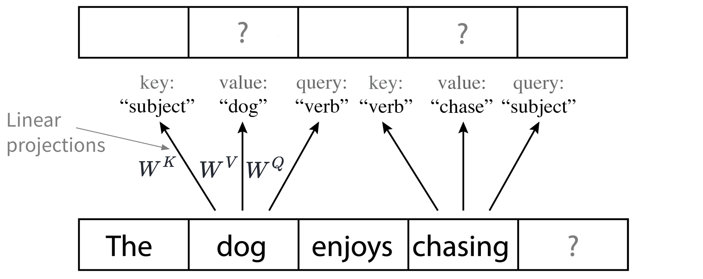

Architectures#

We denote by architecture the overall design of a neural network, i.e. the way front-end and projections are used together.
U-Net#
The U-Net was proposed in [RFB15] in the framework of biomedical image segmentation and made popular in MIR by [JHM+17] for singing voice separation.
The U-Net is an auto-encoder with skip-connections.
The encoder (left part) downsample the spatial dimensions and increase the depth,
The decoder (right part) upsample the spatial dimensions and decrease the depth.
Skip connections are added between equivalent layers of the encoder and decoder:
example: the 256 channels level of the encoder is concatenated with the 256 level of the decoder to form a 512 tensor.
The goal of the skip-connections are two-folds:
to bring back details of the original images to the decoder (the bottleneck being to compressed to represent detailed information)
to facilitate the backpropagation of the gradient.
The upsampling (decoder) part can be done either
using Transposed Convolution (hence a well-known checkerboard artefact may appears)
using Interpolation followed by Normal convolution

Figure U-Net architecture for biomedical image segmentation image source: [RFB15]
Many to One: reducing the time dimensions#
They are many different ways to reduce a (temporal) sequence of embeddings \(\{ \mathbf{x}_1, \ldots \mathbf{x}_{T_x}\}\) to a single embedding \(\mathbf{x}\) (Many-to-One).
Such a mechanism can be necessary in order to map the temporal embedding provided by the last layer of a network to a single ground-truth (such as in auto-tagging, where the whole track is from a given genre, or in Acoustic Scene Classification).
The most simple way to achieve this is to use the Mean/Average value (Average Pooling) or Maximum value (Max Pooling) of the \(\mathbf{x}_t\) over time \(t\) (as done for example in [Die14]).
Attention weighting#
Another possibility is to compute a weighted sum of the values \(\mathbf{x}_t\) where the weights \(a_t\) are denoted by attention parameters: \(\mathbf{x} = \sum_{t=0}^{T_x-1} a_t \mathbf{x}_t\)
In [GSL19], it is proposed to compute these weights \(a_t\) either
by computing a new projection of the \(\mathbf{x}_t\) and then normalize them: \(a_t = \frac{\sigma(\mathbf{v}^T h(\mathbf{x}_t))}{\sum_{\tau} \sigma(\mathbf{v}^T h(\mathbf{x}_{\tau}))}\)
with \(h\) a learnable embedding, \(\mathbf{v}\) the learned parameters of the attention layer
doing the same after splitting \(\mathbf{x}_t\) in two (along the channel dimensions): the first part being used to compute “values”, the second to compute “weights”

Figure Attention weighting, image source: [GSL19]
class nnSoftmaxWeight(nn.Module):
"""
Perform attention weighing based on softmax with channel splitting
Code from https://github.com/furkanyesiler/move
"""
def __init__(self, nb_channel):
super().__init__()
self.nb_channel = nb_channel
def forward(self, X):
weights = torch.nn.functional.softmax(X[:, int(self.nb_channel/2):], dim=3)
X = torch.sum(X[:, :int(self.nb_channel/2)] * weights, dim=3, keepdim=True)
return X
Auto-Pool#
The above attention mechanism can by combined with the auto-pool operators proposed by [MSB18].
The auto-pool operators is defined as
It uses a parameter \(\alpha\) which allows to range from
\(\alpha=0\) (unweighted, a.k.a. average pooling),
\(\alpha=1\) (softmax weighted mean),
\(\alpha=\infty\): (a.k.a. max pooling).
The \(\alpha\) parameters is a trainable parameters (optimized using SGD).

Figure Auto-pool operator image source: [MSB18]
# Code: https://github.com/furkanyesiler/move
def f_autopool_weights(data, autopool_param):
"""
Calculating the autopool weights for a given tensor
:param data: tensor for calculating the softmax weights with autopool
:return: softmax weights with autopool
see https://arxiv.org/pdf/1804.10070
alpha=0: unweighted mean
alpha=1: softmax
alpha=inf: max-pooling
"""
# --- x: (batch, 256, 1, T)
x = data * autopool_param
# --- max_values: (batch, 256, 1, 1)
max_values = torch.max(x, dim=3, keepdim=True).values
# --- softmax (batch, 256, 1, T)
softmax = torch.exp(x - max_values)
# --- weights (batch, 256, 1, T)
weights = softmax / torch.sum(softmax, dim=3, keepdim=True)
return weights
Using models#
It is also possible to use a RNN/LSTM in Many-to-One configuration (only the last hidden state \(\mathbf{x}_{T_x}\) is mapped to an output \(\hat{y}\)).
Finally it is possible to add an extra CLASS token to a Transformer architecture.

It should be noted that the term “Attention” encapsulates a large set of different paradigms.
In the encode-decoder architecture [BCB15] it is used during decoding to define the correct context \(\mathbf{c}_{\tau}\) to be used to generate the hidden state \(\mathbf{s}_{\tau}\). For this it compares the decoder hidden state \(\mathbf{s}_{\tau-1}\) to all the encoder hidden states \(\mathbf{a}_t\).
In the transformer architecture [VSP+17] it is used to compute a self-attention. For this, the \(\mathbf{x}_t\) are mapped (using matrix projections) to query \(\mathbf{q}_t\), key \(\mathbf{k}_t\) and values \(\mathbf{v}_t\). A given \(\mathbf{q}_{\tau}\) is then compared to all \(\mathbf{k}_t\) to compute attention weights \(\mathbf{a}_{t,\tau}\) which are used in the weighting sum of the \(\mathbf{v}_t\): \(\mathbf{e}_{\tau} = \sum_t \mathbf{a}_{t,\tau} \mathbf{v}_{t}\).
Recurrent Architectures#
RNN#
Recurrent Neural Networks (RNNs) are a type of neural network designed to work with sequential data (e.g., time series, text, etc.). They “remember” information from previous inputs by using hidden states, which allows them to model dependencies across time steps.
Their generic formulation for inputs \(\mathbf{x}_t\) over time is:
where \(\mathbf{h}_t\) is the hidden state of the RNN at time \(t\).
A bi-directional-RNN, read the data in both directions (left-to-right and right-to-left). The goal is to make \(\mathbf{h}_t\) both dependent on \(\mathbf{h}_{t-1}\) and \(\mathbf{h}_{t+1}\).
Two configurations are often used with RNNs:
Many-to-Many: RNN can be used to model the evaluation over time of features (such as done in the past with Kalman filters or HMM). They are often used to represent a Language model.
Many-to-One: One can also use the last hidden state of a RNN \(\mathbf{h}_{T_x}\) where \(T_x\) is the length of the input sequence, to sum up the content of the input sequence (see picture below).

Figure RNN in Many-to-Many and Many-to-One configurations image source: Link
torch.nn.RNN(input_size, hidden_size, num_layers=1, bidirectional=False)
LSTM#
Long Short-Term Memory (LSTM) are a specialized type of RNN designed to handle long-term dependencies more effectively. LSTM use a more complex architecture with
a memory \(\mathbf{c}_t\) over time \(t\),
a hidden value \(\mathbf{h}_t\) and
a set of gates (input gate, forget gate, and output gate)
they allow to control the flow of information between the input \(\mathbf{x}_t\), the previous hidden state \(\mathbf{h}_{t-1}\) and memory \(\mathbf{c}_{t-1}\) and their new values.
This allows them to retain relevant information over longer sequences while “forgetting” irrelevant information.
A critical reason why LSTMs work better than RNNs is that the memory cell provides a path for information to flow across time steps without repeatedly passing it through non-linearities (e.g., torch.nn.Sigmoid or torch.nn.Tanh).
This principle mitigates the vanishing gradient problem and is similar to ResNets and the residual stream in Transformers, where skip connections allow information to bypass layers that add non-linearities.
As in RNNs, two configurations are often used with LSTMs:
Many-to-many
Many-to-one

Figure Details of a LSTM cell image source: Link
torch.nn.LSTM(input_size, hidden_size, num_layers=1, bidirectional=False)
Transformer/Self-Attention#
{kind=link}
Figure: The Transformer - model architecture.
In recent years, Transformers [VSP+17] widely replaced recurrent architectures for sequence modeling tasks and are also increasingly used instead of convolutional architectures. Their signature component, the attention mechanism, gives them a unique advantage over previous architectures. There are several intuitive explanations for the attention mechanism (e.g., attending to important tokens, address-based memory access). Independent of how one thinks about the attention mechanism, its result is an attention matrix (resembling a weight matrix) that is input-dependent, while most other architectures employ weight matrices whose parameters are fixed at inference time.
For sequence modeling (cf. our autoregressive generation example), we usually employ a causal transformer where attention matrices are masked so that future information cannot be taken into consideration (indicated by Masked Multi-Head Attention in the figure above).
For that, we only use the DECODER part, while for non-causal tasks like masked token prediction [DCLT19], the ENCODER part is used.
Using both, an encoder with cross-connections to the decoder, as proposed in the initial paper, is mainly used to inject conditioning information if needed.
Note that after every Multi-Head Attention or Feed Forward module, there is an Add & Norm operation.
This means, the input to each module is added to its output, resulting in a “residual stream”, where information is written into or retrieved from.
From a simplified point of view, it is now understood that the Mult-Head Attention modules rather combine and shuffle information from the residual stream, while weights of the Feed Forward modules act as “memories” that inject new information into the residual stream.
Self-Attention Example#
This section gives an explanation of self-attention that is illustrative but very simplified. In practice, tokens are not full words but rather word fragments. Keys, values and queries are continuous vectors whose meaning is not as simple and discrete as in the example below, and a token can attend to more than one value. However, the example is correct in how information is propagated through a self-attention layer and could theoretically happen as described.
 Figure: Simple self-attention example.
In self-attention, every token (every word in the example above), is represented by an embedding vector. By multiplying every such token embedding with three fixed matrices (\(W^K\), \(W^V\) and \(W^Q\)) we obtain a key, value and query vector for every position.
In our simplified example, the model may have learned to emit a key vector that stands for verb from a token embedding that stands for chasing, effectively saying “i am a verb!”. For the dog embedding, it may ask “what is the dog doing?” and therefore emitting a query resembling the verb key. The result of the self-attention is then to copy the value to whereever a query fits the respective key:
{kind=link}
Figure: Result of the simple self-attention example.
As indicated in the architecture diagram, after every attention layer, there is an Add & Norm operation.
In our example, we start from the dog embedding (i.e., the dog position in a semantic space), and add the chase vector, effectively augmenting dog by moving into the chase direction.
As a result, we obtain a “chasing dog” that can then be further transformed in subsequent layers.
Through iterative, relative transformations of such embeddings in a semantic space, we can thereby resolve complex relationships and perform precise, final predictions.
Positional Encoding#
Note that in the example above, the results would occur the same way if the order of the input sequence would be shuffled (i.e., the chase vector would also be added to the dog position). …